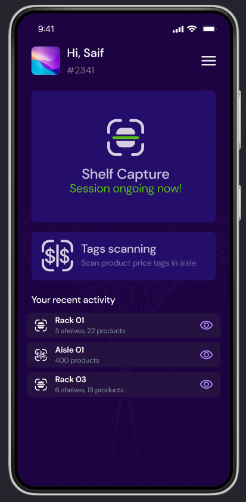
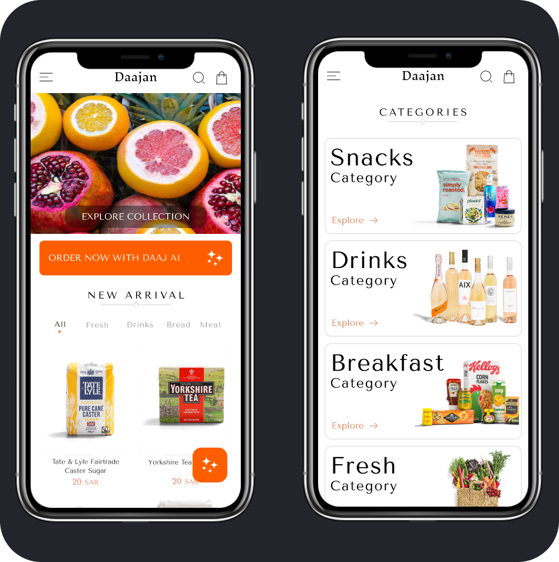
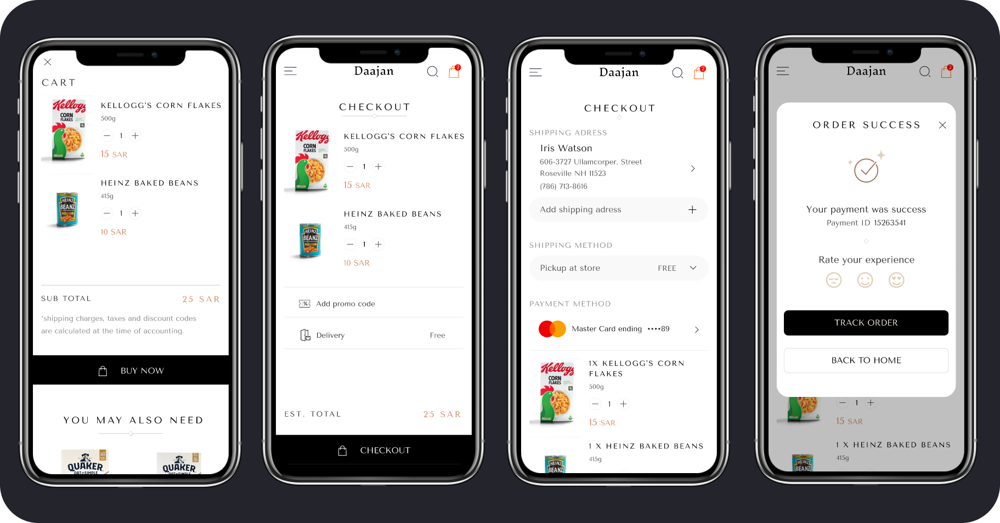
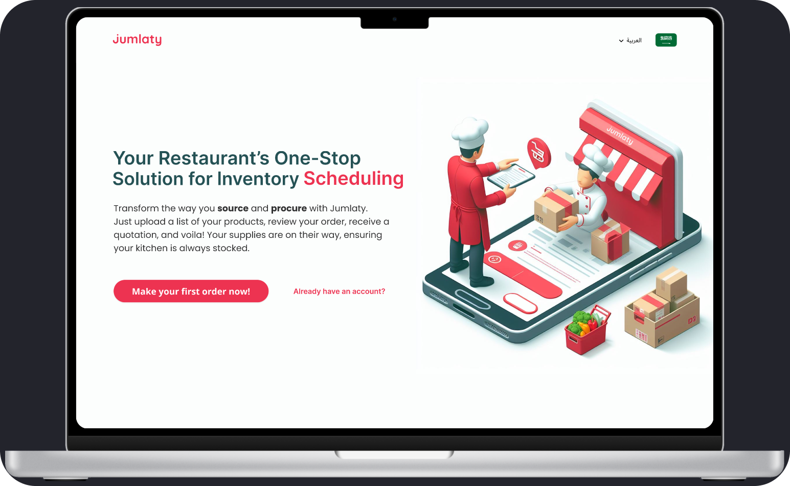
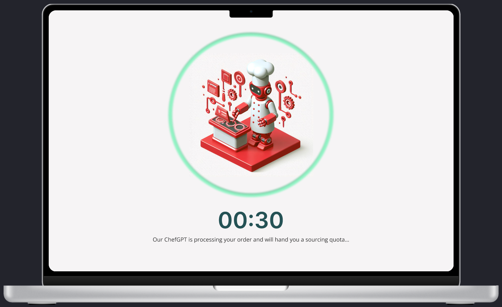
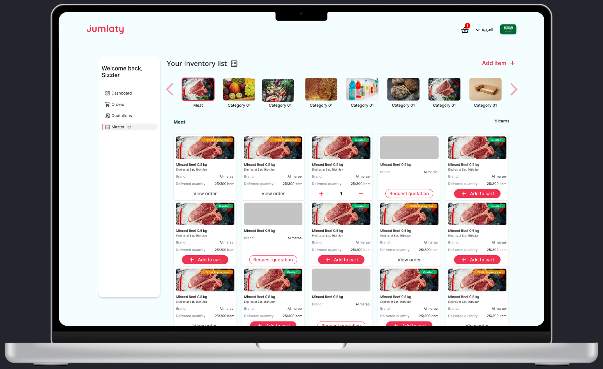
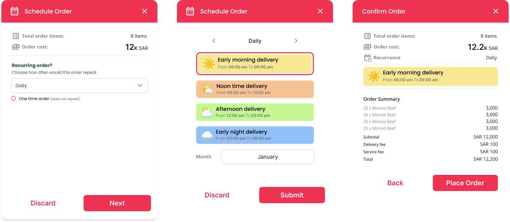

- Role
- Product Designer, part-time and remote
- Period
- Mar 2024 to Feb 2025
- Domain
- Venture studio: retail, commerce, HR automation
- Output
- MVP scopes, user flows, prototypes, product direction
1MORETHING Ventures / Product Design / Mar 2024 to Feb 2025
Three ventures,
one recurring
question.
A venture studio hands you an idea and a short runway, not a backlog. My job was to turn ambiguous concepts into something a team could actually decide on: a scope, a flow, a prototype you could hold. Across three of those ventures the same question kept returning, because all three leaned on a model that would sometimes be wrong.
The shape of the work
Studio work is decided before it is built.
These were not products I maintained for a year. Each one was a concept that needed to become concrete enough to commit to or walk away from, which changes what a designer is actually for. The deliverable is a decision, and the prototype is the argument.
-
What I was given
A premise, a market, and a technology that might or might not hold up. Rarely a defined user, almost never a defined scope.
-
What I produced
Scoped MVPs, end-to-end flows, and prototypes concrete enough to put in front of stakeholders and clients.
-
What it had to answer
Is this worth building, for whom, and what is the smallest version that still proves the point.
Two notes on how to read this page. These are product directions and prototypes from a studio engagement, not products I ran in production, so I make no claims about usage or revenue. And the CV also lists Layla HR, an AI HR automation concept from the same period; it has no public material, so it is named here and not illustrated.
The throughline
Designing for a model that is confidently wrong.
Computer vision on a shop shelf, a photo of a fridge, a supplier list parsed out of a spreadsheet: all three ventures put a model somewhere in the middle of the job. The interesting design work is not the moment it succeeds. It is everything you owe the user when it does not.
- Show the confidenceIf the system is guessing, say how strongly. A silent guess and a certain answer should never look identical.
- Always leave a manual roadA barcode to scan, a count to type, a person to ask. The flow cannot dead-end because the model shrugged.
- Review before commitPut a human checkpoint between what the model produced and what the business records as true.
Venture 01 / Inveasy
Counting a shop floor with a camera.
Retail stock counting is slow, repetitive and error-prone, and it usually happens after hours with a clipboard. Inveasy points a phone at a rack instead: computer vision detects the shelves, identifies the products, and proposes the counts. I designed the experience and prototyped it.



Published in my public UXcel showcase. View the source
Venture 02 / Daajan and Daaj
An assistant that starts from your kitchen, not the catalogue.
Daajan is a premium grocery app. The proposal was Daaj, an assistant built into it, and the idea worth defending is the entry point: most grocery apps ask what you want to buy, which is a question you can only answer if you already know what you have. Daaj starts from a photo of the fridge, or of a meal you want to cook, and works backwards to the basket.




Published in my public UXcel showcase. View the source
Venture 03 / JumlatyPro
Procurement for kitchens that order the same thing every week.
JumlatyPro is B2B ordering for hotels, restaurants and catering. A restaurant does not shop, it re-orders, so the design problem is not discovery but repetition: get a kitchen's existing supplier list into the system without retyping it, then let them schedule the same order against a delivery window. The design phase ran in one intensive week.






Published in my public UXcel showcase, where this project is credited to NOMU Group, the company behind JumlatyPro. View the source
What I took from it
A prototype is the cheapest way to have the real argument.
Studio work compresses the distance between an idea and its first honest test. Three times over I watched a concept survive the pitch and then change shape the moment it existed as a flow, usually because the model at its centre turned out to be less reliable than the pitch assumed. Designing the failure path first is not pessimism. It is how you find out whether the idea still works when the technology behaves like technology.
Every screen on this page comes from my own public UXcel showcases, each linked in its section. The Inveasy and Daajan showcases name 1MORETHING Ventures directly; the JumlatyPro showcase names NOMU Group, and the work sits in the same 1MORETHING period. Outcome language from those showcases has deliberately not been carried over here, because none of it is numbers I can evidence.
Back to selected work